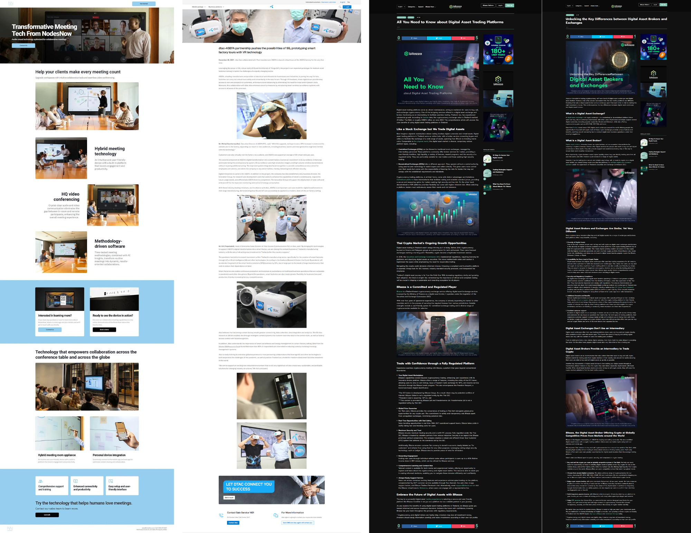
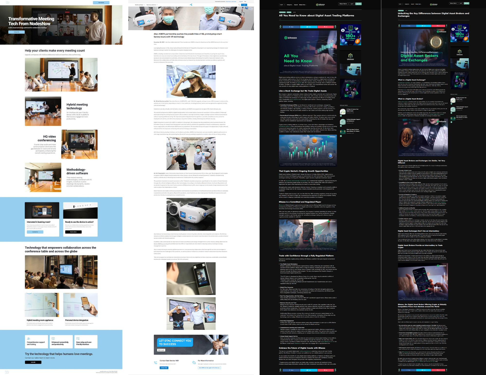
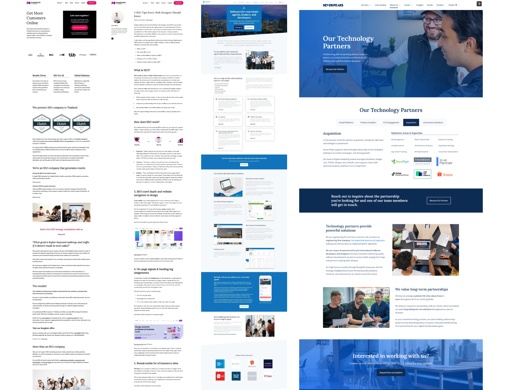
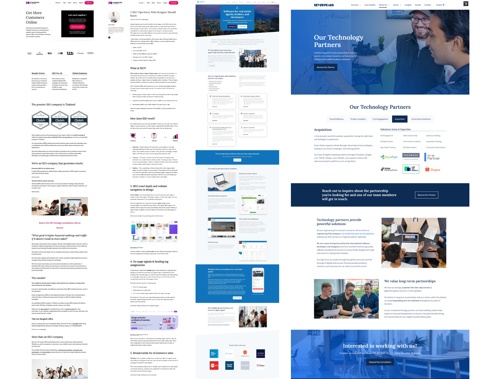

Web Development
Step into my portfolio, where I proudly present a glimpse of my available (non-confidential) builds across different content management systems.


 

 

Embark on a journey through my extensive expertise in web development and design, honing years of mastery with a handful of CMS systems. With over 5 years of dedicated experience in WordPress and 2 years in HubSpot CMS, complemented with experience in platforms like Framer, Wix, Duda, Apostrophe, Strapi, Shopify, and a bit of Next.js.
I specialize and enjoy crafting custom code solutions tailored to replicate UX designs, or designs from scratch, with precision.